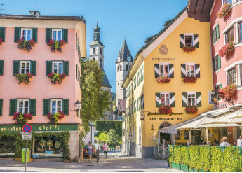

!Best destination to celebrate New Year!
Are you tired of seeing the same faces on New Year's eve? Do you want to see new landscapes, new environments, meet new people? We give you Madeira Islands, Portugal.
Where? From the deck of your cruise ship or from the port of Funchal, the fireworks is so huge that you can not miss it.
Why? The famous fireworks display, officially recognized by the Guinness World Records, in 2006, as the largest display of fireworks in the world.
This magnificent scenario, of rare beauty, is simply unique, with thousands of multi-coloured lamps decorating the amphitheater of Funchal, transforming it into a grandiose stage. As the clock strikes twelve, on the 31st, the sky is lit up with colour, light and hope in a new year that is just beginning.
Most beautiful ski resort in Europe
It is just as you imagined it when you were a child : authentic mountain village, traditional chalet, firewood cooking in an indescribable atmosphere... This mountain village have a soul.
If you are familiar with this ski resort you probably know that the symbol of Kitzbühel is a pretty little mountain goat. A symbol that you will find everywhere on the spot. This symbol is not a coincidence since Kitzbuhel means "The mountain goat hill".
Kitzbühel is one of the most beautiful ski resorts in Europe but also one of the best ski resorts with most important sporting events such as the Alpine Ski World Cup.